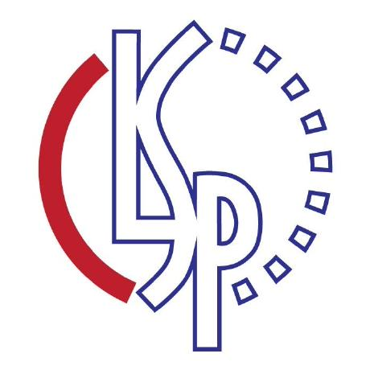

Experience
Research, building, teaching — and time on the field and ice.
Research Positions
-
Social Cognitive AI Lab
Social cognition, theory of mind, and collaboration between AI agents. Advisor: Prof. Tianmin Shu Details -

Center for Language and Speech Processing
Cross-lingual prosody, speech translation, and how expression carries across languages. Advisors: Prof. Philipp Koehn, Prof. Berrak Sisman Details
Industry & Teaching


Athletics
Honors & Service
Best Paper AwardICML 2026 Workshop on RLxFThoughtTrace →2026
ReviewerICML 2026 Workshop on Pluralistic Alignment2026
Dean's ListJohns Hopkins University · 6 semesters
Ignite Fund RecipientJohns Hopkins University
USACO PlatinumUSA Computing Olympiad